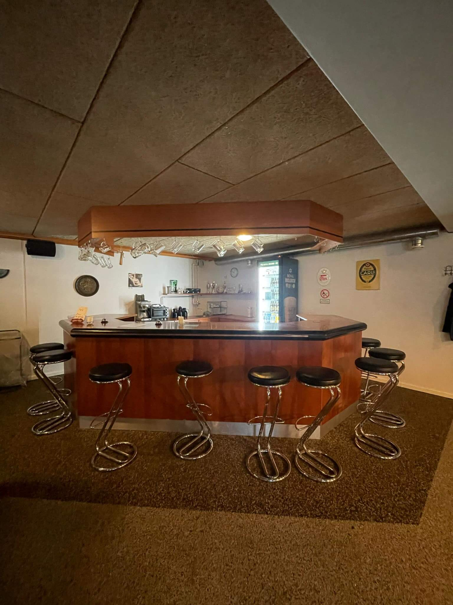
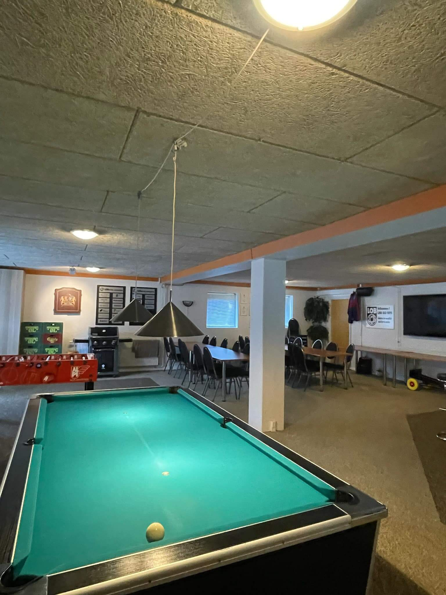
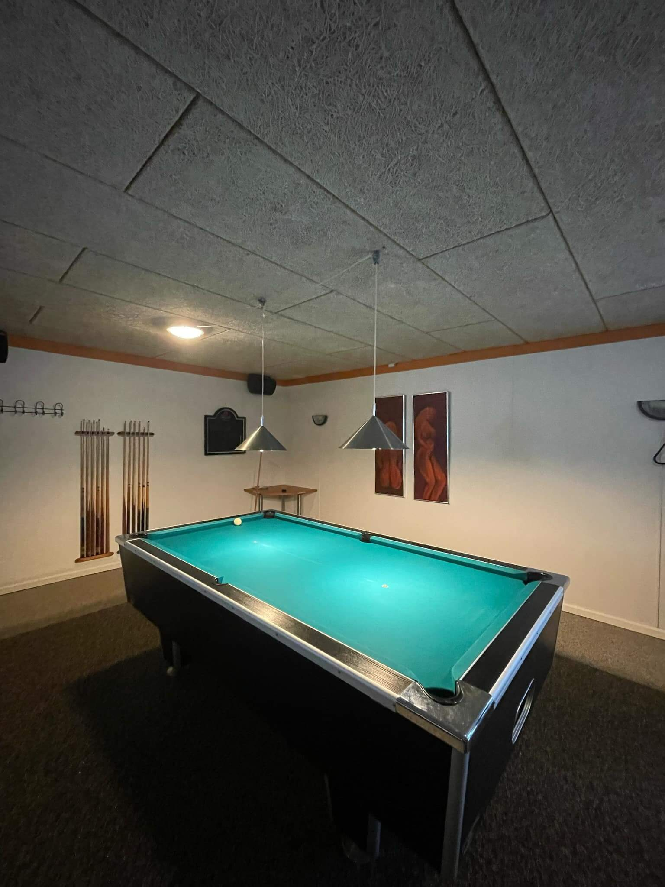
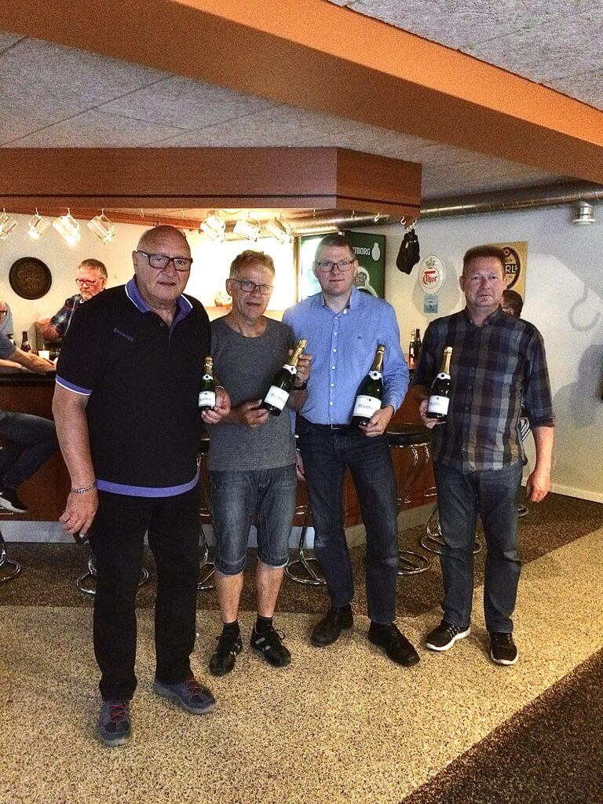

Velkommen til Lind Old Boys
Lind Old Boys – ”gentleman-klubben” for alle i Lind og omegn på 28+ Klubben blev dannet i Lind 7. maj 1969 og har i dag over 100 medlemmer, men kan sagtens rumme flere. Vi har eget hyggeligt klublokale, LOBbyen, i kælderen under Hal 2 i ALPI Hallerne.
Du behøver aldrig kede dig, hvis du bliver medlem af LOB. Vi kommer hinanden ved og mødes til klubtræf onsdag aften og lørdag formiddag – eller hvor vi, når FCM spiller, i samlet flok besætter en del af Faxe Kondi tribunen på MCH Arena – eller køber billige billetter til andre sport events i Herning – eller lejer en bus og kører til Parken for at se bold.



